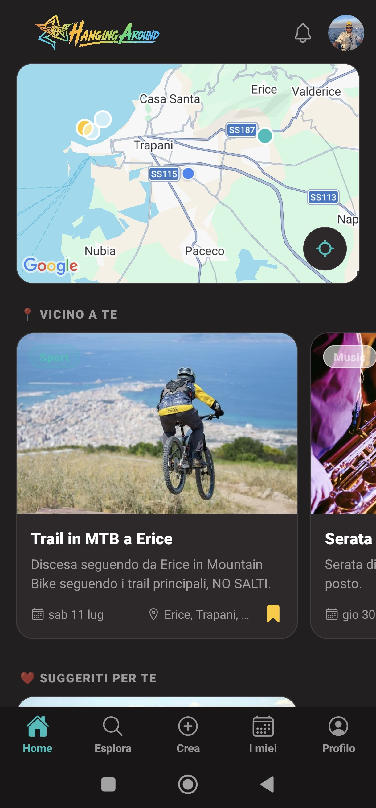
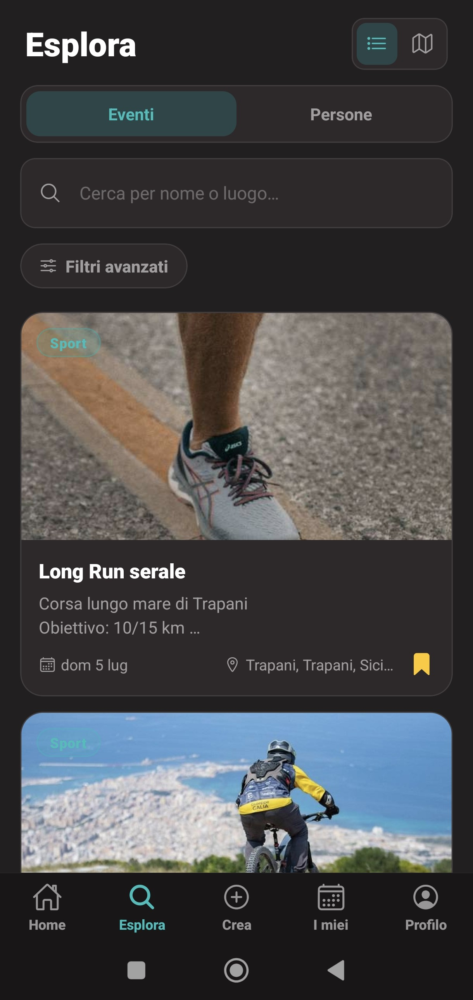
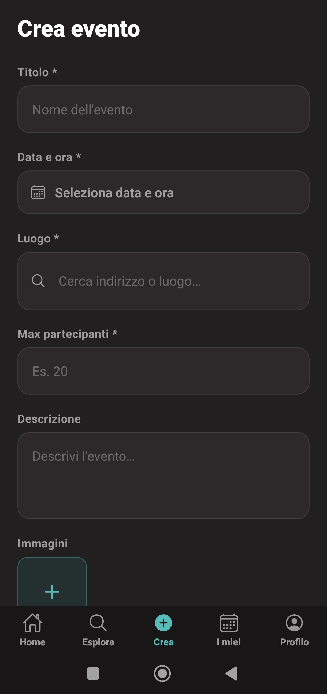

Case Study · Mobile Social App
A social app that turns shared passions into real-world meetups. People discover hobbies and activities happening around them and join others nearby — designed for the Sicilian territory to fight social isolation and grow local communities.



Screens from the Hanging Around app
Sicily is a territory marked by strong social closure and low bridging social capital — people stay inside tight, familiar circles and rarely connect across groups. For anyone new to a place, or simply looking to pursue a hobby with others, there was no simple way to find who is doing what, where, and when.
Existing social networks optimise for online engagement, not for actually meeting up. The need was a tool that starts from a shared interest and ends with people in the same room.
Hanging Around was born from a simple question: "what if joining an activity near you was as easy as liking a post?" Instead of feeds, the app is organised around interests and local activities you can actually attend.
Goal
Turn shared passions into real meetups.
Target
Young people & newcomers in Sicilian towns.
Outcome
Stronger, wider local communities.
A React Native mobile client talks to a Nest.js REST API over HTTPS. The backend follows Nest's layered structure — Controller → Service → Model — persisting to PostgreSQL. Authentication is handled with JWT: the client stores the token and sends it on every request.
Request flow — from a tap to the database and back
The JSON response travels back up the same chain — Service → Controller → HTTP response — and React Native updates the UI. Each layer has one job, which keeps the code testable and easy to reason about.
Frontend
React Native — screens, navigation, local state, and a thin API layer that wraps every REST call and attaches the auth token.
Backend
Nest.js — modules per domain (users, activities, interests), each with its Controller, Service and Entity/Model.
Database
PostgreSQL — relational schema for users, activities and the many-to-many "participations" that link them.
Auth & API
JWT-based auth guarding protected routes; a REST API with predictable resource-oriented endpoints.
Why: one codebase for iOS and Android — the right trade-off for a small team shipping a mobile-first product.
How: built the screens, navigation and a reusable API client; managed loading/error states around every REST call.
Payoff: fast iteration and a native feel without maintaining two separate apps.
Why: an opinionated structure (modules, controllers, services, dependency injection) that scales cleanly as features grow.
How: implemented the Controller → Service → Model layers, DTO validation, and JWT-guarded REST endpoints.
Payoff: a predictable, testable backend where every responsibility lives in one obvious place.
Why: shared language across app and API, with types catching mistakes before runtime.
How: typed the API contracts so the same shapes describe requests on the client and DTOs on the server.
Payoff: fewer integration bugs and safer refactors.
Why: the data is relational — users, activities and participations — so a relational DB fits naturally.
How: modelled entities and relations, enforcing integrity with keys and constraints.
Payoff: reliable queries and a schema that documents the domain.
Keeping the frontend and backend contracts in sync
Solved: typed the request/response shapes in TypeScript and reused them on both sides. Learned: a shared contract removes a whole class of integration bugs.
Structuring a growing Nest.js backend
Solved: committed to the Controller/Service/Model split per module. Learned: putting each responsibility in one obvious place pays off the moment a second developer joins.
Protecting write operations
Solved: moved capacity and duplicate-join checks into the service layer, not the client. Learned: the server is the only place you can trust to enforce a rule.
Want to see the code?